1 Παραλληλόγραμμο
1.1 Ορισμοί
Παραλληλόγραμμο
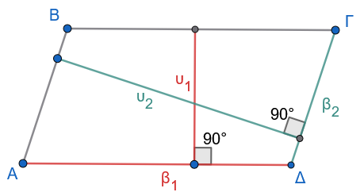
Παραλληλόγραμμο ονομάζεται το κυρτό τετράπλευρο το οποίο έχει τις απέναντι πλευρές του παράλληλες. Δηλαδή, ένα τετράπλευρο \(AB\Gamma\Delta\) είναι παραλληλόγραμμο όταν: \[AB \parallel \Gamma\Delta \quad \text{και} \quad A\Delta \parallel B\Gamma\]
Απόσταση Παραλλήλων:
Το μήκος του ευθύγραμμου τμήματος που είναι κάθετο σε δυο παράλληλες ευθείες και έχει τα άκρα του πάνω σε αυτές, ορίζεται ως η απόσταση των παραλλήλων ευθειών. (\(υ_1\) και \(υ_2\) στο σχήμα 1)
Ύψος και Βάση παραλληλογράμμου:
Σε κάθε παραλληλόγραμμο οι αποστάσεις των παραλλήλων πλευρών του ορίζονται σαν ύψος που αντιστοιχεί για αυτές τις παράλληλες πλευρές οι οποίες ορίζονται σαν βάση . (Σχήμα 1)
1.2 Ιδιότητες
Σε κάθε παραλληλόγραμμο ισχύουν οι ακόλουθες βασικές ιδιότητες:
Οι απέναντι πλευρές του είναι ίσες ανά δύο (\(AB = \Gamma\Delta\) και \(A\Delta = B\Gamma\)).
Οι απέναντι γωνίες του είναι ίσες ανά δύο (\(\widehat{A} = \widehat{\Gamma}\) και \(\widehat{B} = \widehat{\Delta}\)).
Οι διαγώνιοί του διχοτομούνται (τέμνονται στο μέσο τους).
1.2.1 Απόδειξη των ιδιοτήτων 1 και 2:
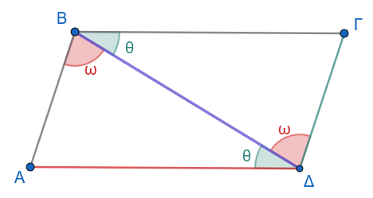
Έστω παραλληλόγραμμο \(AB\Gamma\Delta\) με \(AB \parallel \Gamma\Delta\) και \(A\Delta \parallel B\Gamma\). Φέρουμε τη διαγώνιο \(B\Delta\). Συγκρίνουμε τα τρίγωνα \(AB\Delta\) και \(B\Gamma\Delta\). Αυτά έχουν:
Την πλευρά \(B\Delta\) κοινή.
\(\widehat{B}_1 = \widehat{\Delta}_1 = \hat ω\), ως εντός εναλλάξ γωνίες των παραλλήλων ευθειών \(AB\) και \(\Gamma\Delta\) που τέμνονται από τη \(B\Delta\).
\(\widehat{B}_2 = \widehat{\Delta}_2 = \hatθ\), ως εντός εναλλάξ γωνίες των παραλλήλων ευθειών \(A\Delta\) και \(B\Gamma\) που τέμνονται από τη \(B\Delta\).
Σύμφωνα με το κριτήριο ισότητας τριγώνων Γωνία - Πλευρά - Γωνία (Γ-Π-Γ), τα τρίγωνα \(AB\Delta\) και \(B\Gamma\Delta\) είναι ίσα.
Από την ισότητα αυτή προκύπτει ότι οι αντίστοιχες πλευρές και γωνίες τους είναι ίσες, δηλαδή: \[AB = \Gamma\Delta \quad \text{και} \quad A\Delta = B\Gamma\]
Επίσης, προκύπτει άμεσα ότι: \[\widehat{A} = \widehat{\Gamma} \quad \text{και} \quad \widehat{B} = \widehat{\Delta} = \hat θ + \hat ω\]
1.2.2 Απόδειξη της ιδιότητας 3:
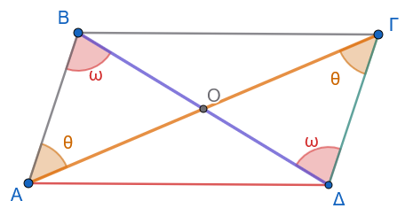
Έστω \(O\) το σημείο τομής των διαγωνίων \(A\Gamma\) και \(B\Delta\) του παραλληλογράμμου \(AB\Gamma\Delta\). Συγκρίνουμε τα τρίγωνα \(OAB\) και \(O\Gamma\Delta\). Αυτά έχουν:
\(AB = \Gamma\Delta\), ως απέναντι πλευρές του παραλληλογράμμου (από την ιδιότητα 1).
\(\widehat{B}_1 = \widehat{\Delta}_1 = \hat ω\), ως εντός εναλλάξ γωνίες των παραλλήλων \(AB\) και \(\Gamma\Delta\) με τέμνουσα τη \(B\Delta\).
\(\widehat{A}_1 = \widehat{\Gamma}_1 = \hat θ\), ως εντός εναλλάξ γωνίες των παραλλήλων \(AB\) και \(\Gamma\Delta\) με τέμνουσα την \(A\Gamma\).
Σύμφωνα με το κριτήριο Γ-Π-Γ, τα τρίγωνα \(OAB\) και \(O\Gamma\Delta\) είναι ίσα, οπότε προκύπτει ότι οι αντίστοιχες πλευρές τους είναι ίσες: \[OA = O\Gamma \quad \text{και} \quad OB = O\Delta\]
Συνεπώς, οι διαγώνιοι του παραλληλογράμμου διχοτομούνται στο σημείο \(O\).
1.3 Πορίσματα
Πόρισμα 1
Το σημείο τομής \(O\) των διαγωνίων του παραλληλογράμμου αποτελεί κέντρο συμμετρίας του και ονομάζεται κέντρο του παραλληλογράμμου. Κάθε ευθύγραμμο τμήμα που διέρχεται από το κέντρο \(O\) και έχει τα άκρα του στις απέναντι πλευρές του παραλληλογράμμου διχοτομείται από αυτό.
Απόδειξη:
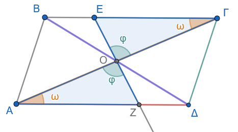
Έστω παραλληλόγραμμο \(AB\Gamma\Delta\) με \(AB \parallel \Gamma\Delta\) και \(A\Delta \parallel B\Gamma\), και \(O\) το σημείο τομής των διαγωνίων του \(A\Gamma\) και \(B\Delta\). Από τις ιδιότητες του παραλληλογράμμου, οι διαγώνιοί του διχοτομούνται στο \(O\), δηλαδή ισχύει \(OA = O\Gamma\) και \(OB = O\Delta\).
Για να αποδείξουμε ότι το σημείο \(O\) είναι κέντρο συμμετρίας του παραλληλογράμμου, αρκεί να δείξουμε ότι το συμμετρικό κάθε σημείου του σχήματος ως προς το \(O\) ανήκει επίσης στο σχήμα.
Θεωρούμε ένα τυχαίο σημείο \(E\) πάνω στην πλευρά \(BΓ\) του παραλληλογράμμου.
Φέρουμε την ευθεία \(EO\), η οποία τέμνει την απέναντι πλευρά \(ΑΔ\) σε ένα σημείο \(Z\).
Συγκρίνουμε τα τρίγωνα \(OAΖ\) και \(OΕΓ\):
- \(OA = O\Gamma\), διότι οι διαγώνιοι διχοτομούνται στο \(O\).
- \(\widehat{AOΖ} = \widehat{\Gamma OΕ}=\hatφ\), ως κατακορυφήν γωνίες.
- \(\widehat{OAZ} = \widehat{O\Gamma E}\), ως εντός εναλλάξ γωνίες των παραλλήλων ευθειών \(AΔ\) και \(ΒΓ\) με τέμνουσα την \(A\Gamma\).
Σύμφωνα με το κριτήριο ισότητας τριγώνων Γωνία - Πλευρά - Γωνία (Γ-Π-Γ), τα τρίγωνα \(OAE\) και \(O\Gamma Z\) είναι ίσα.
Από την ισότητα αυτή προκύπτει ότι οι αντίστοιχες πλευρές τους είναι ίσες, δηλαδή: \[OE = OZ\]
Επειδή τα σημέια \(E, O, Z\) είναι συνευθειακά και ισχύει \(OE = OZ\), το σημείο \(Z\) είναι το συμμετρικό του \(E\) ως προς κέντρο συμμετρίας το \(O\).
Καθώς το σημείο \(Z\) ανήκει στην πλευρά \(ΑΔ\), αποδεικνύεται ότι το συμμετρικό οποιουδήποτε σημείου \(E\) της περιμέτρου του παραλληλογράμμου ως προς το \(O\) ανήκει επίσης στην περίμετρο του παραλληλογράμμου.
Συνεπώς, το σημείο τομής των διαγωνίων είναι πράγματι κέντρο συμμετρίας του παραλληλογράμμου.
Πόρισμα 2:
«Παράλληλα ευθύγραμμα τμήματα που ορίζονται ανάμεσα σε δύο παράλληλες ευθείες είναι ίσα.» (ή αλλιώς: «Παράλληλα τμήματα που έχουν τα άκρα τους σε δύο παράλληλες ευθείες είναι ίσα.»)
Απόδειξη:
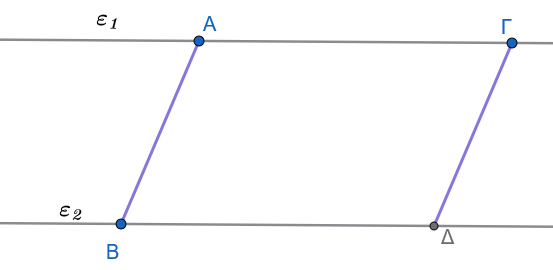
Έστω δύο παράλληλες ευθείες \(\epsilon_1\) και \(\epsilon_2\) (\(\epsilon_1 \parallel \epsilon_2\)). Θεωρούμε δύο παράλληλα ευθύγραμμα τμήματα \(AB\) και \(\Gamma\Delta\) (\(AB \parallel \Gamma\Delta\)), τα οποία έχουν τα άκρα τους \(A\) και \(\Gamma\) στην ευθεία \(\epsilon_1\), και τα άκρα \(B\) και \(\Delta\) στην ευθεία \(\epsilon_2\).
Στο σχηματιζόμενο τετράπλευρο \(AB\Delta\Gamma\):
Οι πλευρές \(AB\) και \(\Gamma\Delta\) είναι παράλληλες από την υπόθεση: \[AB \parallel \Gamma\Delta\]
Οι πλευρές \(A\Gamma\) και \(B\Delta\) βρίσκονται πάνω στους φορείς των παράλληλων ευθειών \(\epsilon_1\) και \(\epsilon_2\) αντίστοιχα, συνεπώς είναι και αυτές παράλληλες μεταξύ τους: \[A\Gamma \parallel B\Delta\]
Από τον ορισμό του παραλληλογράμμου, εφόσον το τετράπλευρο \(AB\Delta\Gamma\) έχει τις απέναντι πλευρές του παράλληλες, είναι παραλληλόγραμμο.
Επειδή σε κάθε παραλληλόγραμμο οι απέναντι πλευρές είναι ίσες, προκύπτει άμεσα ότι: \[AB = \Gamma\Delta\]
Συνεπώς, παράλληλα τμήματα μεταξύ παραλλήλων ευθειών είναι πάντα ίσα.
1.4 Κριτήρια (Πότε ένα τετράπλευρο είναι παραλληλόγραμμο)
Ένα κυρτό τετράπλευρο είναι παραλληλόγραμμο αν και μόνο αν ικανοποιεί μία από τις παρακάτω ικανές και αναγκαίες συνθήκες:
Οι απέναντι πλευρές του είναι ανά δύο ίσες.
Δύο απέναντι πλευρές του είναι ίσες και παράλληλες.
Οι απέναντι γωνίες του είναι ανά δύο ίσες.
Οι διαγώνιοί του διχοτομούνται.
1.4.1 Απόδειξη του Κριτηρίου 1 (Απέναντι πλευρές ίσες ανά δύο):
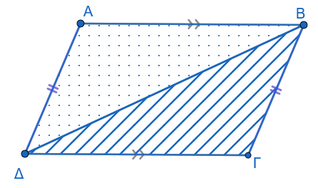
Έστω τετράπλευρο \(AB\Gamma\Delta\) στο οποίο ισχύει \(AB = \Gamma\Delta\) και \(A\Delta = B\Gamma\). Φέρουμε τη διαγώνιο \(B\Delta\). Συγκρίνουμε τα τρίγωνα \(AB\Delta\) και \(B\Gamma\Delta\). Αυτά έχουν:
\(AB = \Gamma\Delta\) (από υπόθεση).
\(A\Delta = B\Gamma\) (από υπόθεση).
Την πλευρά \(B\Delta\) κοινή.
Κατά το κριτήριο ισότητας Πλευρά - Πλευρά - Πλευρά (Π-Π-Π), τα τρίγωνα \(AB\Delta\) και \(B\Gamma\Delta\) είναι ίσα.
Συνεπώς, όλες οι αντίστοιχες γωνίες τους είναι ίσες. Από την ισότητα αυτή προκύπτει ότι:
\(\widehat{ΑBΔ} = \widehat{ΒΔΓ} = \omega \Rightarrow AB \parallel \Gamma\Delta\), διότι οι εντός εναλλάξ γωνίες ως προς την τέμνουσα \(B\Delta\) είναι ίσες.
\(\widehat{ΑΔB} = \widehat{ΔΒΓ} = \phi \Rightarrow A\Delta \parallel B\Gamma\), διότι οι εντός εναλλάξ γωνίες ως προς την τέμνουσα \(B\Delta\) είναι ίσες.
Εφόσον οι απέναντι πλευρές του τετραπλεύρου είναι παράλληλες, το \(AB\Gamma\Delta\) είναι παραλληλόγραμμο.
1.4.2 Απόδειξη του Κριτηρίου 2 (Δύο απέναντι πλευρές ίσες και παράλληλες):
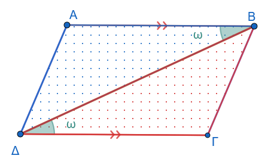
Έστω τετράπλευρο \(AB\Gamma\Delta\) στο οποίο δύο απέναντι πλευρές είναι ίσες και παράλληλες, έστω \(AB \parallel \Gamma\Delta\) και \(AB = \Gamma\Delta\).
Φέρουμε τη διαγώνιο \(B\Delta\). Συγκρίνουμε τα τρίγωνα \(AB\Delta\) και \(B\Gamma\Delta\). Αυτά έχουν:
\(AB = \Gamma\Delta\) (από υπόθεση).
Την πλευρά \(B\Delta\) κοινή.
\(\widehat{B}_1 = \widehat{\Delta}_1 = \omega\), ως εντός εναλλάξ γωνίες των παραλλήλων \(AB\) και \(\Gamma\Delta\) με τέμνουσα τη \(B\Delta\).
Σύμφωνα με το κριτήριο Πλευρά - Γωνία - Πλευρά (Π-Γ-Π), τα τρίγωνα \(AB\Delta\) και \(B\Gamma\Delta\) είναι ίσα.
Συνεπώς, έχουν όλες τις αντίστοιχες γωνίες τους ίσες, άρα: \[\widehat{B}_2 = \widehat{\Delta}_2 = \phi \Rightarrow A\Delta \parallel B\Gamma\] διότι οι εντός εναλλάξ γωνίες ως προς την τέμνουσα \(B\Delta\) είναι ίσες.
Εφόσον \(AB \parallel \Gamma\Delta\) (από υπόθεση) και \(A\Delta \parallel B\Gamma\), το \(AB\Gamma\Delta\) είναι παραλληλόγραμμο.
1.4.3 Απόδειξη του Κριτηρίου 3 (Απέναντι γωνίες ίσες ανά δύο):
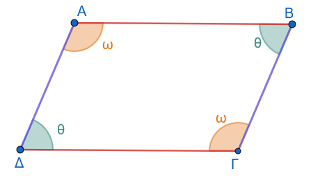
Έστω τετράπλευρο \(AB\Gamma\Delta\) στο οποίο οι απέναντι γωνίες είναι ίσες ανά δύο, δηλαδή \(\widehat{A} = \widehat{\Gamma} = \hat ω\) και \(\widehat{B} = \widehat{\Delta} = \hatθ\).
Γνωρίζουμε ότι το άθροισμα των εσωτερικών γωνιών κάθε κυρτού τετραπλεύρου ισούται με \(360^\circ\) (ή \(4\lfloor\) ορθές).
Συνεπώς: \[\widehat{A} + \widehat{B} + \widehat{\Gamma} + \widehat{\Delta} = 360^\circ \Rightarrow 2\hatω + 2\hatθ = 360^\circ \Rightarrow 2(\hatω + \hatθ) = 360^\circ \Rightarrow \hatω + \hatθ = 180^\circ\]
Από τη σχέση αυτή προκύπτει ότι:
\(\widehat{A} + \widehat{\Delta} = \hatω + \hatθ = 180^\circ\). Επειδή οι γωνίες \(\widehat{A}\) και \(\widehat{\Delta}\) είναι εντός και επί τα αυτά μέρη των ευθειών \(AB\) και \(\Gamma\Delta\) με τέμνουσα την \(A\Delta\) και είναι παραπληρωματικές, προκύπτει ότι \(AB \parallel \Gamma\Delta\).
\(\widehat{A} + \widehat{B} = \hatω + \hatθ = 180^\circ\). Επειδή οι γωνίες \(\widehat{A}\) και \(\widehat{B}\) είναι εντός και επί τα αυτά μέρη των ευθειών \(A\Delta\) και \(B\Gamma\) με τέμνουσα την \(AB\) και είναι παραπληρωματικές, προκύπτει ότι \(A\Delta \parallel B\Gamma\).
Εφόσον \(AB \parallel \Gamma\Delta\) και \(A\Delta \parallel B\Gamma\), το τετράπλευρο \(AB\Gamma\Delta\) είναι παραλληλόγραμμο.
1.4.4 Απόδειξη του Κριτηρίου 4 (Οι διαγώνιοι διχοτομούνται):
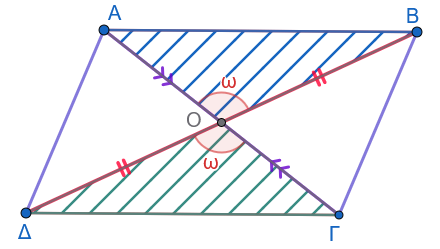
Έστω τετράπλευρο \(AB\Gamma\Delta\) του οποίου οι διαγώνιοι \(A\Gamma\) και \(B\Delta\) τέμνονται στο σημείο \(O\) έτσι ώστε \(AO = O\Gamma\) και \(OB = O\Delta\).
Συγκρίνουμε τα τρίγωνα \(AOB\) και \(O\Gamma\Delta\). Αυτά έχουν:
\(AO = O\Gamma\) (από υπόθεση).
\(OB = O\Delta\) (από υπόθεση).
\(\widehat{AOB} = \widehat{\Gamma O\Delta}\) ως κατακορυφήν γωνίες.
Σύμφωνα με το κριτήριο Π-Γ-Π, τα τρίγωνα \(AOB\) και \(O\Gamma\Delta\) είναι ίσα. Από την ισότητά τους προκύπτει ότι οι αντίστοιχες γωνίες τους είναι ίσες, δηλαδή: \[\widehat{A}_1 = \widehat{\Gamma}_1 \Rightarrow AB \parallel \Gamma\Delta\] καθώς οι εντός εναλλάξ γωνίες ως προς την τέμνουσα \(A\Gamma\) είναι ίσες.
Συγκρίνουμε τώρα τα τρίγωνα \(AO\Delta\) και \(BO\Gamma\). Αυτά έχουν:
\(AO = O\Gamma\) (από υπόθεση).
\(O\Delta = OB\) (από υπόθεση).
\(\widehat{AO\Delta} = \widehat{BO\Gamma}\) ως κατακορυφήν γωνίες.
Σύμφωνα με το κριτήριο Π-Γ-Π, τα τρίγωνα \(AO\Delta\) και \(BO\Gamma\) είναι ίσα. Από την ισότητά τους προκύπτει ομοίως ότι: \[\widehat{A}_2 = \widehat{\Gamma}_2 \Rightarrow A\Delta \parallel B\Gamma\] καθώς οι εντός εναλλάξ γωνίες ως προς την τέμνουσα \(A\Gamma\) είναι ίσες.
Εφόσον \(AB \parallel \Gamma\Delta\) και \(A\Delta \parallel B\Gamma\), το \(AB\Gamma\Delta\) είναι παραλληλόγραμμο.
1.5 Ασκήσεις
1. Δίνεται παραλληλόγραμμο \(AB\Gamma\Delta\). Η διχοτόμος της γωνίας \(\widehat{A}\) τέμνει τη ΔΓ στο σημείο \(E\). Να αποδείξετε ότι \(\Delta E = B\Gamma\).
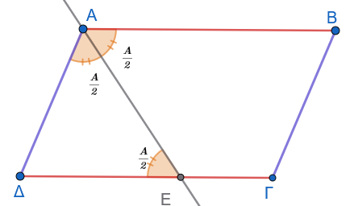
2. Έστω \(O\) το κέντρο παραλληλογράμμου \(AB\Gamma\Delta\). Αν \(E\) και \(Z\) είναι σημεία των \(OA\) και \(O\Gamma\) αντίστοιχα, τέτοια ώστε \(OE = OZ\), να αποδείξετε ότι το τετράπλευρο \(BE\Delta Z\) είναι παραλληλόγραμμο.
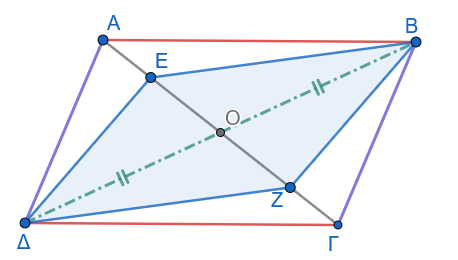
3. Έστω \(E\) και \(Z\) τα μέσα των απέναντι πλευρών \(AB\) και \(\Gamma\Delta\) αντίστοιχα, παραλληλογράμμου \(AB\Gamma\Delta\). Να αποδείξετε ότι:
- Το τετράπλευρο \(AE\Gamma Z\) είναι παραλληλόγραμμο.
- Οι ευθείες \(A\Gamma\), \(B\Delta\) και \(EZ\) συντρέχουν (διέρχονται από το ίδιο σημείο).
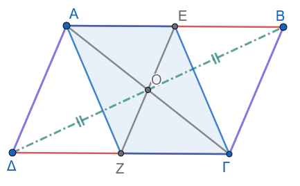
4. Δίνεται τρίγωνο \(AB\Gamma\) και η διχοτόμος του \(A\Delta\). Η παράλληλη από το σημείο \(\Delta\) προς την πλευρά \(AB\) τέμνει την \(A\Gamma\) στο \(E\). Αν η παράλληλη από το \(E\) προς τη \(B\Gamma\) τέμνει την \(AB\) στο σημείο \(Z\), να αποδείξετε ότι \(AE = BZ\).
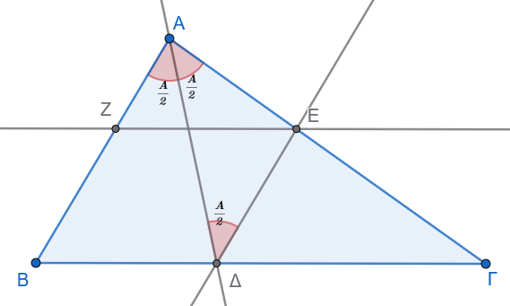
5. Σε παραλληλόγραμμο \(AB\Gamma\Delta\) φέρουμε τα κάθετα τμήματα \(AE \perp \Delta\Gamma\) και \(\Gamma Z \perp AB\). Να αποδείξετε ότι το τετράπλευρο \(AZ\Gamma E\) είναι ορθογώνιο παραλληλόγραμμο.
6. Δίνεται παραλληλόγραμμο \(AB\Gamma\Delta\) με γωνία \(\widehat{B} = 45^\circ\). Από το μέσο \(M\) της πλευράς \(\Gamma\Delta\) φέρουμε κάθετο πάνω στη \(\Gamma\Delta\), η οποία τέμνει τις ευθείες \(A\Delta\) και \(B\Gamma\) (ή τις προεκτάσεις τους) στα σημεία \(E\) και \(Z\) αντίστοιχα. Να αποδείξετε ότι το τετράπλευρο \(\Delta E\Gamma Z\) είναι τετράγωνο.
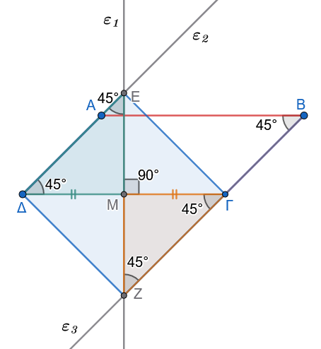
7. Δίνεται παραλληλόγραμμο \(AB\Gamma\Delta\) και τα σημεία \(E, Z, H\) και \(K\) των πλευρών του \(AB, B\Gamma, \Gamma\Delta\) και \(A\Delta\) αντίστοιχα, έτσι ώστε \(AE = \Gamma H\) και \(BZ = \Delta K\). Να αποδείξετε ότι:
Το τετράπλευρο \(EZHK\) είναι παραλληλόγραμμο.
Οι ευθείες \(A\Gamma, B\Delta, EH\) και \(KZ\) συντρέχουν.
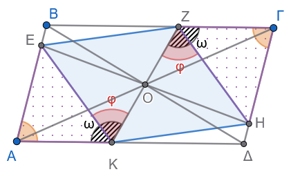
Υπόδειξη
Δείτε ότι τα τρίγωνα ΑΕΚ και ΖΓΗ είναι ίσα.
Τα τετράπλευρα ΒΖΔΚ και ΒΕΔΗ είναι παραλληλόγραμμα.
Τα τετράπλευρα ΑΕΓΗ και ΑΖΓΚ είναι παραλληλόγραμμα.
8. Προεκτείνουμε την πλευρά \(AB\) παραλληλογράμμου \(AB\Gamma\Delta\) κατά τμήμα \(BE = B\Gamma\) και στην πλευρά \(ΔA\) προς το \(A\) παίρνουμε τμήμα \(\Delta Z = \Delta\Gamma\). Να αποδείξετε ότι η γωνία \(\widehat{Z\Gamma E} = 90^\circ\).
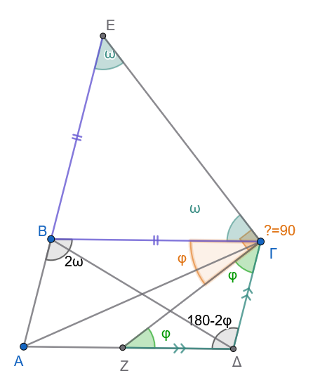
Υπόδειξη
Τρίγωνο ΒΕΓ ισοσκελές
Τρίγωνο ΖΔΓ ισοσκελές
Οι απέναντι γωνίες του παραλληλογράμμου είναι ίσες \(\hat A=\hat Γ\)
9. Δίνεται παραλληλόγραμμο \(AB\Gamma\Delta\). Προεκτείνουμε την πλευρά \(AB\) κατά τμήμα \(BE = B\Gamma\) και την πλευρά \(A\Delta\) κατά τμήμα \(\Delta Z = \Delta\Gamma\). Να αποδείξετε ότι τα σημεία \(Z, \Gamma\) και \(E\) είναι συνευθειακά.
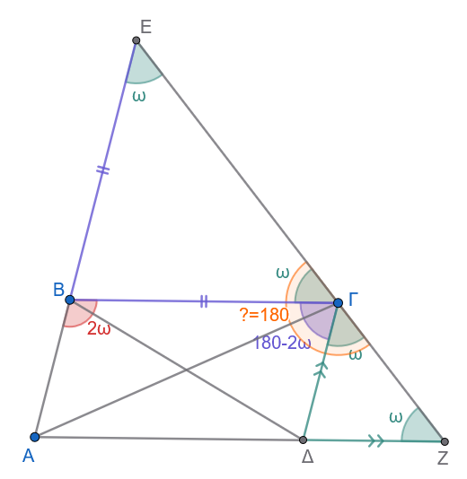
Υπόδειξη
Δείτε τα ισοσκελή τρίγωνα. Εξηγείστε γιατί οι γωνίες ω είναι ίσες
Δείτε τις παραπληρωματικές γωνίες \(\hat B\) και \(\hat Γ\) του παραλληλογράμμου.
10. Αν \(E\) και \(Z\) είναι τα μέσα των πλευρών \(B\Gamma\) και \(\Gamma\Delta\) παραλληλογράμμου \(AB\Gamma\Delta\) αντίστοιχα, να αποδείξετε ότι οι ευθείες \(AE\) και \(AZ\) τριχοτομούν τη διαγώνιο \(B\Delta\).
Λύση
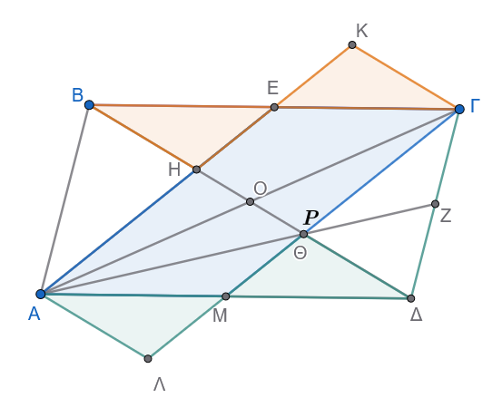
Βήμα 1: Κατασκευή βοηθητικού παραλληλογράμμου
Θεωρούμε το \(M\), το μέσο της πλευράς \(A\Delta\).
Στο παραλληλόγραμμο \(AB\Gamma\Delta\) ισχύει \(A\Delta \parallel B\Gamma\) και \(A\Delta = B\Gamma\).
Τα τμήματα \(AM\) και \(E\Gamma\) είναι τα μισά των ίσων και παράλληλων πλευρών, άρα: \[AM \parallel E\Gamma \quad \text{και} \quad AM = E\Gamma\]. Επομένως, το τετράπλευρο \(AM\Gamma E\) είναι παραλληλόγραμμο (έχει δύο απέναντι πλευρές ίσες και παράλληλες).
Άρα οι άλλες δύο πλευρές του είναι παράλληλες: \[AE \parallel M\Gamma\]
Έστω \(P\) το σημείο τομής της ευθείας \(M\Gamma\) με τη διαγώνιο \(B\Delta\).
Το Ρ συμπίπτει με το Θ , το σημείο τομής των δύο άλλων διαμέσων ΑΖ και ΔΟ στο τρίγωνο ΑΓΔ αφού και η ΓΜ είναι διάμεσος
Επειδή \(AE \parallel M\Gamma\), έχουμε: \[HE \parallel P\Gamma \quad \text{και} \quad AH \parallel MP\]
Βήμα 2: Απόδειξη ότι \(BH = HP\) (με ίσα τρίγωνα & παραλληλόγραμμο)
Στην ημιευθεία \(HE\), προεκτείνουμε κατά ίσο τμήμα \(EK = HE\).
Σύγκριση τριγώνων \(\triangle BEH\) και \(\triangle \Gamma EK\):
- \(BE = E\Gamma\) (το \(E\) είναι μέσο της \(B\Gamma\)).
- \(HE = EK\) (από κατασκευή).
- \(\widehat{BEH} = \widehat{\Gamma EK}\) (είναι κατακορυφήν, αφού οι \(B\Gamma\) και \(HK\) είναι ευθείες που τέμνονται στο \(E\)).
Από το κριτήριο Π-Γ-Π, τα τρίγωνα είναι ίσα (\(\triangle BEH = \triangle \Gamma EK\)). Επομένως: \[BH = \Gamma K \quad \text{και} \quad \widehat{EBH} = \widehat{E\Gamma K}\]
Ιδιότητα παραλληλίας:
Επειδή \(\widehat{EBH} = \widehat{E\Gamma K}\) (ίσες εντός εναλλάξ), προκύπτει ότι: \[\Gamma K \parallel B\Delta \implies \Gamma K \parallel HP\]Στο τετράπλευρο \(HP\Gamma K\):
- \(HP \parallel \Gamma K\) (από παραπάνω)
- \(HK \parallel P\Gamma\) (αφού \(AE \parallel M\Gamma\))
Άρα το \(HP\Gamma K\) είναι παραλληλόγραμμο, οπότε οι απέναντι πλευρές του είναι ίσες: \[HP = \Gamma K\]
Επειδή δείξαμε ότι \(BH = \Gamma K\), έχουμε: \[BH = HP\]
Βήμα 3: Απόδειξη ότι \(HP = P\Delta\)
Στην ημιευθεία \(PM\), προεκτείνουμε κατά ίσο τμήμα \(M\Lambda = PM\).
Σύγκριση τριγώνων \(\triangle \Delta MP\) και \(\triangle AM\Lambda\):
- \(\Delta M = MA\) (το \(M\) είναι μέσο της \(A\Delta\)).
- \(PM = M\Lambda\) (από κατασκευή).
- \(\widehat{\Delta MP} = \widehat{AM\Lambda}\) (κατακορυφήν, αφού οι \(A\Delta\) και \(P\Lambda\) τέμνονται στο \(M\)).
Από το κριτήριο Π-Γ-Π, τα τρίγωνα είναι ίσα (\(\triangle \Delta MP = \triangle AM\Lambda\)). Επομένως: \[P\Delta = A\Lambda \quad \text{και} \quad \widehat{M\Delta P} = \widehat{MA\Lambda} \implies A\Lambda \parallel B\Delta \implies A\Lambda \parallel HP\]
Στο τετράπλευρο \(HP\Lambda A\):
- \(HP \parallel A\Lambda\)
- \(AH \parallel P\Lambda\) (αφού \(AE \parallel M\Gamma\))
Άρα το \(HP\Lambda A\) είναι παραλληλόγραμμο, οπότε: \[HP = A\Lambda\]
Επειδή \(P\Delta = A\Lambda\), προκύπτει: \[HP = P\Delta\]
Βήμα 4: Συμπέρασμα για το σημείο \(H\)
Από τα Βήματα 2 και 3 έχουμε: \[BH = HP = P\Delta\]
Επειδή τα τρία αυτά τμήματα συνθέτουν ολόκληρη τη διαγώνιο \(B\Delta\): \[BH = \frac{1}{3} B\Delta\]
Βήμα 5: Τελικό Συμπέρασμα για τη διαγώνιο \(B\Delta\)
Η ευθεία \(AE\) (που ενώνει την κορυφή \(A\) με το μέσο \(E\) της \(B\Gamma\)) αποδείξαμε ότι τέμνει τη διαγώνιο σε σημείο \(H\) τέτοιο ώστε: \[BH = \frac{1}{3} B\Delta\]
Με τον ίδιο ακριβώς τρόπο, η ευθεία \(AZ\) (που ενώνει την κορυφή \(A\) με το μέσο \(Z\) της \(\Gamma\Delta\)) τέμνει τη διαγώνιο από την πλευρά του \(\Delta\) σε σημείο \(\Theta\) τέτοιο ώστε: \[\Theta\Delta = \frac{1}{3} B\Delta\]
Το ενδιάμεσο τμήμα \(H\Theta\) ισούται με: \[H\Theta = B\Delta - BH - \Theta\Delta = B\Delta - \frac{1}{3} B\Delta - \frac{1}{3} B\Delta = \frac{1}{3} B\Delta\]
Συνεπώς: \[BH = H\Theta = \Theta\Delta = \frac{1}{3} B\Delta\]
Άρα οι ευθείες \(AE\) και \(AZ\) τριχοτομούν τη διαγώνιο \(B\Delta\).
Έτσι για να μάθετε !!!
Όταν δεν μπορείς να χρησιμοποιήσεις την απλή σχέση που ισχύει για την διάμεσο \(ΑK=\dfrac{2}{3}AM\), γιατί δεν έχει διδαχτεί ακόμη, πρέπει να σκαρφιστείς όλο αυτό το κατεβατό για να την λύσεις.
11. Σε παραλληλόγραμμο \(AB\Gamma\Delta\) προεκτείνουμε την πλευρά \(AB\) κατά τμήμα \(BE = AB\). Αν η ευθεία \(\Delta E\) τέμνει την \(A\Gamma\) στο \(H\) και τη \(B\Gamma\) στο \(Z\), να αποδείξετε ότι:
α. \(BZ = Z\Gamma\).
β. \(\Gamma H = \dfrac{AH}{2}\).
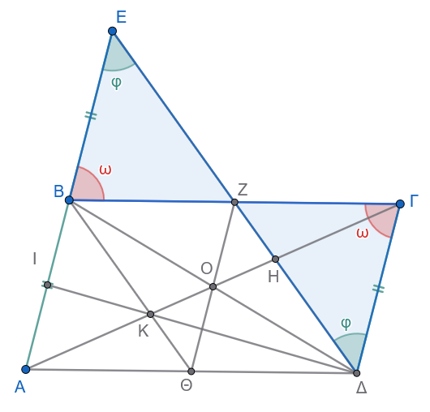
Για το β. δείτε την άσκηση 10.
Εκφώνηση
12. Δίνεται παραλληλόγραμμο \(AB\Gamma\Delta\) και μια ευθεία \((\varepsilon)\) που τέμνει το παραλληλόγραμμο έτσι ώστε να αφήνει την κορυφή \(A\) προς το ένα ημιεπίπεδο και τις υπόλοιπες κορυφές \(B, \Gamma, \Delta\) προς το άλλο. Αν \(AE, BZ, \Gamma H, \Delta\Theta\) είναι οι κάθετες αποστάσεις των κορυφών \(A, B, \Gamma, \Delta\) αντίστοιχα από την ευθεία \((\varepsilon)\), να αποδείξετε ότι:
\[AE + BZ + \Delta\Theta = \Gamma H\]
Λύση
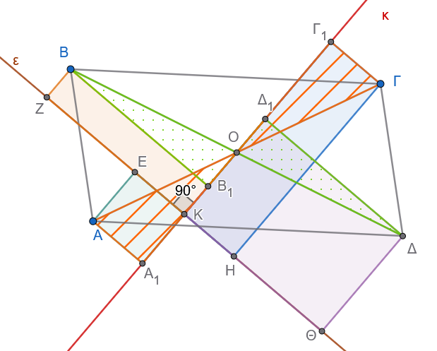
Απόδειξη με ίσα τρίγωνα
Έστω \(O\) το σημείο τομής των διαγωνίων του παραλληλογράμμου. Το \(O\) είναι το μέσο των \(A\Gamma\) και \(B\Delta\) (δηλαδή \(OA = O\Gamma\) και \(OB = O\Delta\)).
- Φέρνουμε από το \(O\) την ευθεία που είναι κάθετη στην \((\varepsilon)\) και τέμνει την \((\varepsilon)\) στο σημείο \(K\) (άρα το \(OK\) είναι η απόσταση του \(O\) από την \((\varepsilon)\)).
- Προεκτείνουμε την ευθεία \(OK\).
- Από κάθε κορυφή (\(A, B, \Gamma, \Delta\)) φέρνουμε παράλληλες στην ευθεία \((\varepsilon)\), οι οποίες τέμνουν την ευθεία \(OK\) στα σημεία \(A_1, B_1, \Gamma_1, \Delta_1\) αντίστοιχα.
Επειδή τα τμήματα \(AE, BZ, \Gamma H, \Delta\Theta\) είναι κάθετα στην \((\varepsilon)\), τα τετράπλευρα που σχηματίζονται με την ευθεία \(OK\) είναι ορθογώνια, οπότε:
- \(AE = K A_1\)
- \(BZ = K B_1\)
- \(\Gamma H = K \Gamma_1\)
- \(\Delta\Theta = K \Delta_1\)
1. Σύγκριση για τη διαγώνιο \(B\Delta\)
Συγκρίνουμε τα ορθογώνια τρίγωνα \(\triangle O B B_1\) και \(\triangle O \Delta \Delta_1\):
Έχουν υποτείνουσες ίσες: \(OB = O\Delta\) (αφού το \(O\) είναι μέσο της \(B\Delta\)).
Έχουν τις οξείες γωνίες \(\widehat{B O B_1} = \widehat{\Delta O \Delta_1}\) ως κατακορυφήν.
Άρα τα τρίγωνα είναι ίσα, οπότε έχουν και τις κάθετες πλευρές τους ίσες: \[OB_1 = O\Delta_1\]
Παρατηρούμε τα μήκη πάνω στην ευθεία \(OK\):
Το σημείο \(B_1\) βρίσκεται ανάμεσα στα \(K\) και \(O\), οπότε: \(BZ = K B_1 = OK - OB_1\)
Το σημείο \(\Delta_1\) βρίσκεται στην προέκταση του \(KO\), οπότε: \(\Delta\Theta = K \Delta_1 = OK + O\Delta_1\)
Προσθέτουμε κατά μέλη: \[BZ + \Delta\Theta = (OK - OB_1) + (OK + O\Delta_1)\]
Επειδή \(OB_1 = O\Delta_1\), τα τμήματα αυτά απλοποιούνται: \[BZ + \Delta\Theta = 2 \cdot OK \quad \text{(1)}\]
2. Σύγκριση για τη διαγώνιο \(A\Gamma\)
Συγκρίνουμε τα ορθογώνια τρίγωνα \(\triangle O A A_1\) και \(\triangle O \Gamma \Gamma_1\):
Έχουν υποτείνουσες ίσες: \(OA = O\Gamma\) (αφού το \(O\) είναι μέσο της \(A\Gamma\)).
Έχουν τις οξείες γωνίες \(\widehat{A O A_1} = \widehat{\Gamma O \Gamma_1}\) ως κατακορυφήν.
Άρα τα τρίγωνα είναι ίσα, οπότε: \[OA_1 = O\Gamma_1\]
Παρατηρούμε τα μήκη πάνω στην ευθεία \(OK\):
- Το σημείο \(A\) είναι από την άλλη πλευρά της \((\varepsilon)\), οπότε: \(AE = K A_1 = OA_1 - OK\)
- Το σημείο \(\Gamma\) είναι από την πλευρά του \(O\), οπότε: \(\Gamma H = K \Gamma_1 = OK + O\Gamma_1\)
Αφαιρούμε κατά μέλη: \[\Gamma H - AE = (OK + O\Gamma_1) - (OA_1 - OK)\] \[\Gamma H - AE = OK + O\Gamma_1 - OA_1 + OK\]
Επειδή \(OA_1 = O\Gamma_1\), έχουμε: \[\Gamma H - AE = 2 \cdot OK \quad \text{(2)}\]
3. Τελικό Συμπέρασμα
Από τις σχέσεις (1) και (2) έχουμε: \[BZ + \Delta\Theta = \Gamma H - AE\]
Μεταφέροντας το \(AE\) στο αριστερό μέλος: \[AE + BZ + \Delta\Theta = \Gamma H\]
13. Δίνεται παραλληλόγραμμο \(AB\Gamma\Delta\) και μια ευθεία \((\delta)\) η οποία δεν τέμνει το παραλληλόγραμμο. Αν \(AE, BZ, \Gamma H, \Delta\Theta\) είναι οι κάθετες αποστάσεις των κορυφών από την ευθεία \((\delta)\), να αποδείξετε ότι:
\[AE + \Gamma H = BZ + \Delta\Theta\]
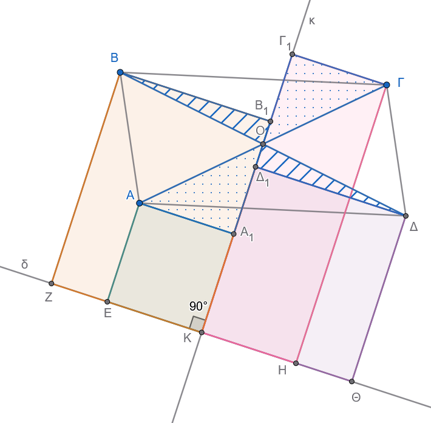
Εργαστείτε όπως και στην άσκηση 13
14. Σε παραλληλόγραμμο \(AB\Gamma\Delta\) ισχύει ότι η γωνία \(\widehat{A} = 2\widehat{\Delta}\) και η πλευρά \(AB = 2AΔ\). Να αποδείξετε ότι η γωνία \(\widehat{A\Gamma B} = 90^\circ\).
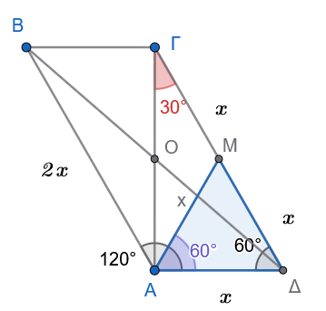
Εκφώνηση
15. Δίνεται παραλληλόγραμμο \(AB\Gamma\Delta\) και ένα τυχαίο σημείο \(O\) της διαγωνίου του \(A\Gamma\). Από το \(O\) φέρουμε τις παράλληλες προς τις πλευρές του παραλληλογράμμου, οι οποίες τέμνουν τις \(AB, \Delta\Gamma\) στα σημεία \(E, H\) και τις \(B\Gamma, A\Delta\) στα σημεία \(Z, \Theta\) αντίστοιχα. Να αποδείξετε ότι οι ευθείες \(E\Theta\) και \(ZH\) είναι παράλληλες.
Λύση
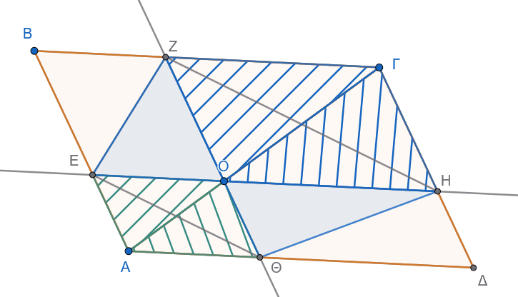
Απόδειξη με Εμβαδά
1. Ισότητα των παραπληρωματικών παραλληλογράμμων
Η διαγώνιος \(A\Gamma\) χωρίζει το αρχικό παραλληλόγραμμο \(AB\Gamma\Delta\) σε δύο ισεμβαδικά τρίγωνα: \[(AB\Gamma) = (A\Delta\Gamma)\]
Γύρω από τη διαγώνιο σχηματίζονται δύο μικρότερα παραλληλόγραμμα:
Το \(AE O \Theta\) με διαγώνιο την \(AO\), άρα: \[(AEO) = (A\Theta O)\]
Το \(O Z \Gamma H\) με διαγώνιο την \(O\Gamma\), άρα: \[(OZ\Gamma) = (OH\Gamma)\]
Αφαιρώντας τα εμβαδά αυτά από τα αρχικά τρίγωνα: \[(AB\Gamma) - (AEO) - (OZ\Gamma) = (A\Delta\Gamma) - (A\Theta O) - (OH\Gamma)\]
Προκύπτει ότι τα εναπομείναντα παραλληλόγραμμα \(EBZO\) και \(\Theta OH\Delta\) έχουν ίσα εμβαδά: \[(EBZO) = (\Theta OH\Delta)\]
2. Ισότητα των επιμέρους τριγώνων
Η διαγώνιος \(EZ\) χωρίζει το παραλληλόγραμμο \(EBZO\) στη μέση, οπότε: \[(EOZ) = \frac{1}{2} (EBZO)\]
Η διαγώνιος \(\Theta H\) χωρίζει το παραλληλόγραμμο \(\Theta OH\Delta\) στη μέση, οπότε: \[(\Theta OH) = \frac{1}{2} (\Theta OH\Delta)\]
Επειδή \((EBZO) = (\Theta OH\Delta)\), προκύπτει ότι: \[(EOZ) = (\Theta OH) \quad \text{(1)}\]
3. Σύγκριση των τριγώνων \(E\Theta Z\) και \(E\Theta H\)
Προσθέτουμε και στα δύο μέλη της σχέσης (1) το εμβαδόν του κοινού τριγώνου \((E\Theta O)\): \[(EOZ) + (E\Theta O) = (\Theta OH) + (E\Theta O)\]
Παρατηρούμε από το σχήμα ότι:
\((EOZ) + (E\Theta O) = (E\Theta Z)\)
\((\Theta OH) + (E\Theta O) = (E\Theta H)\)
Επομένως: \[(E\Theta Z) = (E\Theta H)\]
4. Τελικό Συμπέρασμα
Τα τρίγωνα \(\triangle E\Theta Z\) και \(\triangle E\Theta H\):
- Έχουν την ίδια βάση \(E\Theta\).
- Βρίσκονται προς το ίδιο μέρος της ευθείας \(E\Theta\).
- Έχουν ίσα εμβαδά.
Αφού έχουν κοινή βάση και ίσα εμβαδά, τα αντίστοιχα ύψη τους προς την \(E\Theta\) είναι ίσα.
Αυτό σημαίνει ότι οι κορυφές \(Z\) και \(H\) ισαπέχουν από την ευθεία \(E\Theta\), επομένως:
\[E\Theta \parallel ZH\]
ΚΑΛΗ ΜΕΛΕΤΗ !!!